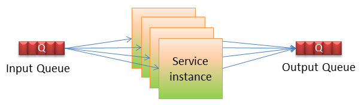
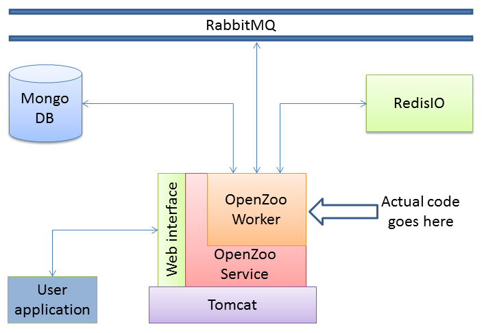
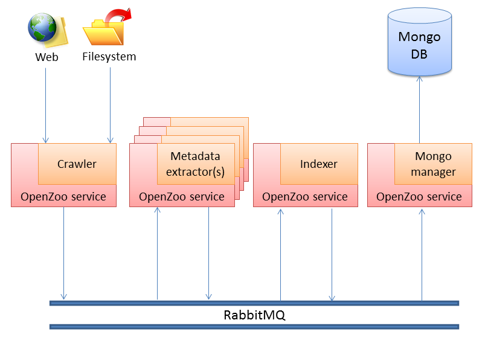
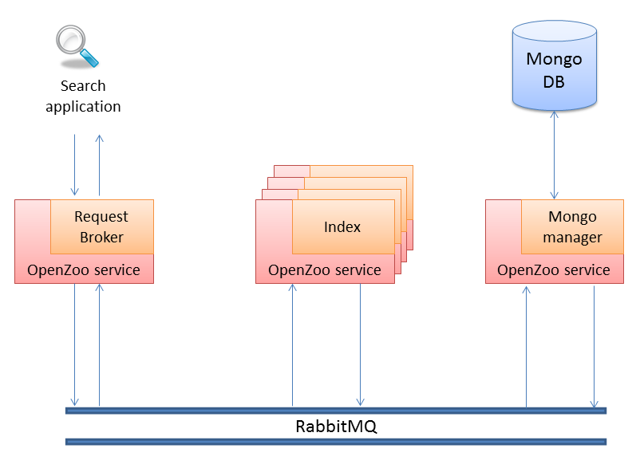

How it works
All framework services inherit a basic OpenZoo service, which almost automates the communication with RedisIO, RabbitMQ, MongoDB and the outer world.
Overview
The standard way of achieving a simple task is the creation of one component, that runs on a single PC and completes the task. In todays Big Data use cases, this is, of course, not an acceptable solution. For achieving a complex stream/batch processing task, a service topology needs to be defined. A topology is a set of services, each of them accomplishing a single subtask, in a Devide & Conquer manner. The services are interconnected in a predefined way, in order to exchange information. Apart from that, each service may have, not one, but several instances, doing the same thing.

Assuming that the input can be divided in small pieces, that can be processed in parallel, this behaviour massively speeds up the procedure. This can be done for every service in a topology.
In OpenZoo, services are built as depicted:

In the sequel, the terms service and component will be used interchangeably. The service is living in a Tomcat container. It can be started, stopped, resetted and queried over a web interface. The service contains a worker, that does the actual job. Several identical worker threads can be created for the same service (on the same server), so that the server resources are fully utilized. Also several instances of the service can be deployed, each on a different server. The instances may be identical or each instance may be dedicated to a specific type of input. The topology is the predefined way of exchanging information between different services. Below, a typical data ingestion topology is depicted:

The crawler introduces content into the system, comming either from the web or the filesystem. Several instances of the metadata extractor, working in parallel, process the content. The indexer indexes some of the produced metadata and the database manager stores everything in the database. Also, a typical search topology follows:

A request broker, receives requests (queries) from the user application and forwards them into the system. The query is received by an arbitrary index instance (in case of several copies of the same index) or by the appropriate index instance (in case of a distributed index) and a result list is produced. The database manager enriches the results with the stored metadata and the final result list is returned to the broker, which answers the request.
Of course, the last two topologies can be merged to one, which will simultaneously ingest content and answer requests about it.
Basic service parts
In order to automate the service creation and the information exchange in the system, a basic service has been developed, from which all OpenZoo services inherit. The main parts of each component are the following:
- A REST class, as an endpoint for web requests (GET, POST, etc.).
- A Service class, responsible for starting, stopping and managing worker threads.
- A Worker class, containing the actual code. Each worker can have zero or one input endpoint and zero or more output endpoints.
The service template enables also the following:
- Reading topology parameters (server addresses, routing information, instantiation, etc.) from the RedisIO
- Exchanging service specific parameters through RedisIO
- Writing service statistics to the RedisIO
Service types
As already depicted in the previous examples, there are two types of services. The operator is a pure service, that receives input from a queue (or from the web/filesystem, in case of a crawler) and writes output to another queue (or to a database in case of a database manager). It cannot communicate with the application user. It has to have at least one endpoint: an input or an output. Also, it can have several instances and several worker threads per instance.
The broker is a more sophisticated service, which accepts requests from the user application, forwards them to the system and waits for responses. As soon as a response is received, it is forwarded to the user application. It has to have at least one input endpoint and one output endpoint. Finally, there should be only one instance of it, with just one worker thread.
Service web interfaces
All services accept a GET request with an action parameter: The action can be one of start/stop/reset/status and forces the service to do exactly that.
Broker services accept also a POST request, for posting queries and and returning the response. The POST body should be an application specific JSONObject.
Communication format
The common communication format for the whole framework is JSON. All JSON messages have the following structure: _id: string: a unique message id header: JSONObject: intended for routing information, not application specific parameters payload: JSONObject: application specific information. Structure defined by service. log: JSONArray: Each component, which processed the message, leaves its signature here. Each record has the following structure: compId: String: unique name of component instId: String: component instance id workId: String: worker class epInId: String: input endpoint id: optional epOutId: String output endpoint id: optional success: boolean: was processing successful? start: long: epoch timestamp, starting millisecond end: long: epoch timestamp, ending millisecond
Even binary data can be added to the payload, through the appropriate function, although it is not recommended to exchange large binary files through the queues.
A routing key can be added to the message.
The logging information is added automatically.
Service endpoints
3 types of endpoints exist:
- Input endpoint
Accept input from the queue. It has the following interfaces:
- public Message getNext(): Blocking function, which returns the next message from queue.
- public boolean ack(Message msg): Acknowledge a message received from the queue. The acknowledgment should happen after the message processing.
- Output endpoint
Post message to the queue. It has the following interface:
- public void put(Message msg): Post message to the queue.
- Logging endpoints
Posts logging information to a dedicated queue. It has the following interfaces:
- public void info(String logmessage): Post informational message.
- public void error(String logmessage): Post error message.
- public void debug(String logmessage): Post debugging information.
All 3 endpoint types need to be initialized through calling:
- public boolean init()
Worker interfaces
All workers inherit the following overridable interfaces:
- public void run()
Contains the endpoint initialization and the main worker loop, where messages are received, processed and posted.
- public boolean doWork(Message message)
Contains the actual code for processing a message.
- public String publish(JSONObject obj)
For broker services, contains the preparation and posting of a query received from the user application. It returns a hash value of the object as a receipt, for a later retrieval of the results.
Also, the following interfaces are inherited:
- public JSONObject getResponse(String hash, int timeout)
Retrieves the query results, using the receipt from the publish call.
- public String getRequiredParameter(String param)
Reads a parameter from the RedisIO.